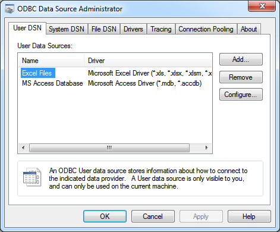
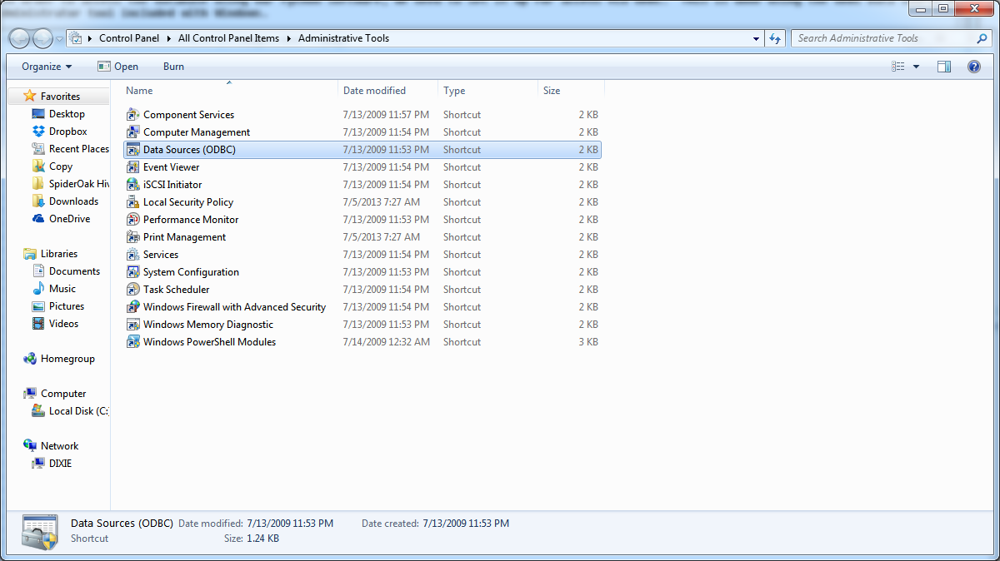
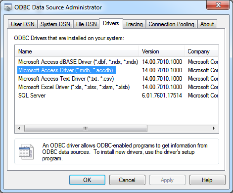
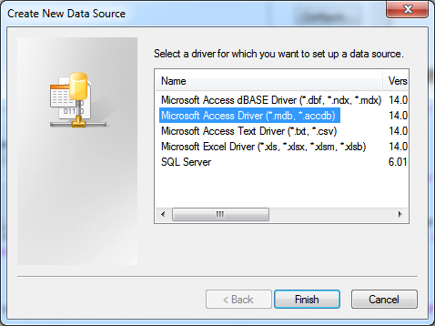
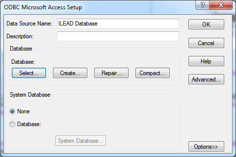
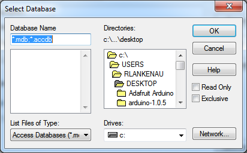
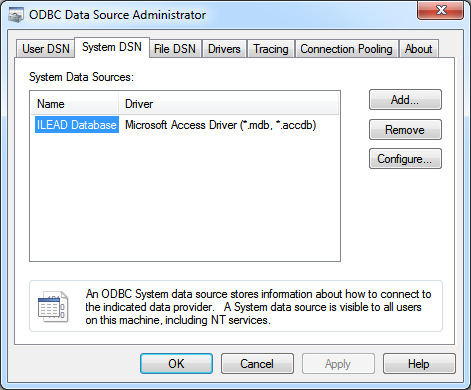

Setting up the ILEAD database for data import
In order to access the database using our Python software, we need to set it up for access via ODBC. This is done using the ODBC Data Source Administrator tool included with Windows.

If you search for "ODBC" in the start menu, it should pop up. If you can't find it there, it is located in the Windows Control Panel under Administrative Tools. The shortcut in the Control Panel is called "Data Sources (ODBC)".

Once you've located and run the tool, click on the "Drivers" tab. We need to confirm that you have the correct driver installed to talk to our Access database. Locate the line in the list of drivers that says "Microsoft Access Driver (.mdb, .accdb)". If you see this line, you're in good shape!

If the line only says "Microsoft Access Driver (*.mdb)", you need to install an updated driver. For more information on how to do that, look at Appendix B.
If you see the correct driver in the list, we're ready to set up the data source. Click over to the tab labeled "System DSN". A DSN, or Data Source Name, is just a convenient way to refer to a database. We're going to create one so that we can access our Access database from a program just by specifying the name "ILEAD Database". Click on the "Add" button on the "System DSN" tab. A window will pop up asking you what kind of data source you want to add.

We're going to add a Microsoft Access DSN, so select that line and then click "Finish".

Type the name "ILEAD Database" exactly as shown here, and then click the "Select" button to choose the file you want to use. Make sure you've put the Access database file somewhere that you want it to stay, because the DSN you're configuring will always refer to the file in that location. You can update it later if you want to change it by following these same steps.

Make sure the "Read-only" and "Exclusive" boxes are not checked when you choose the file. We want to be able to make changes to the file, and to have it open in Access while we're doing it.
Once you've selected your file, you can click "OK" and go back to the ODBC Data Source Administrator. You should see your data source configured just like mine, below.
